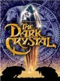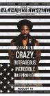
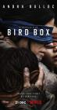
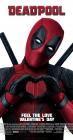
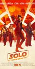
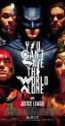
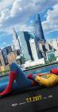
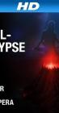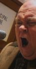
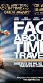
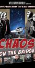
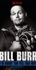
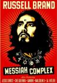
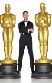
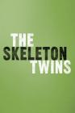
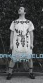
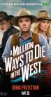
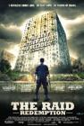
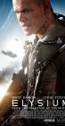
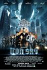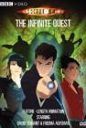
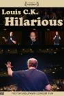
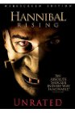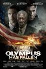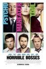
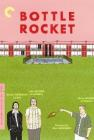
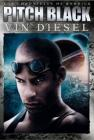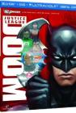
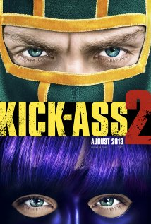
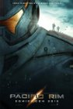
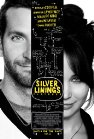
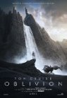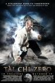
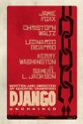
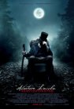
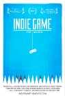
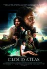
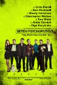
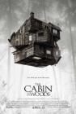
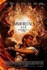
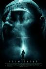
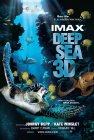
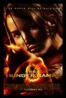
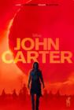
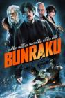
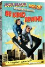
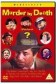
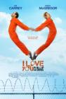
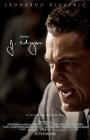
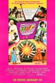


 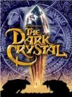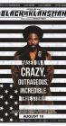
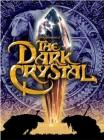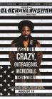

 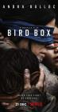
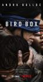


 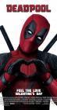
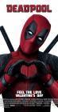


 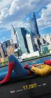
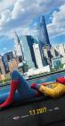


 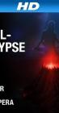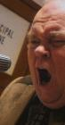
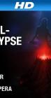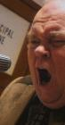
 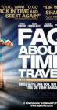
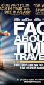


 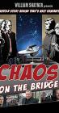
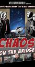


 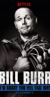
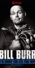
 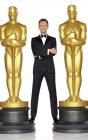
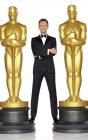
 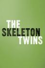
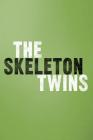
 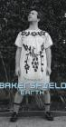
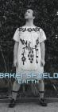


 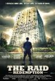
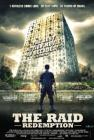


 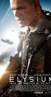
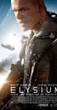

 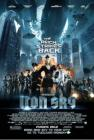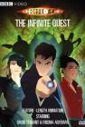
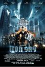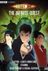 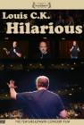
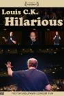

 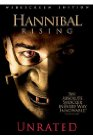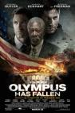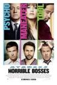
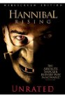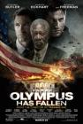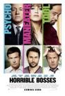

 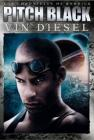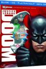
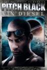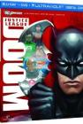
 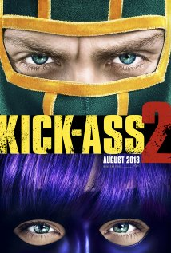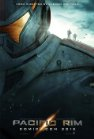
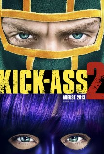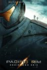


 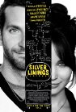
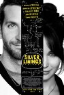 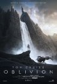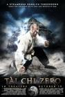
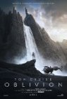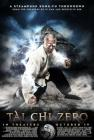


 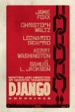
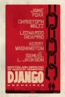
 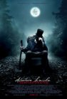
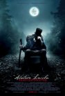
 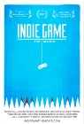
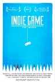 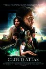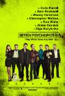
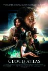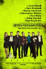
 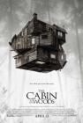
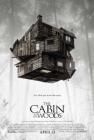


 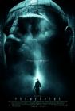
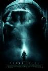 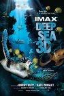
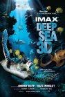


 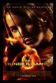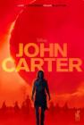
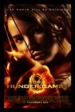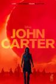

 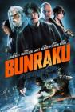
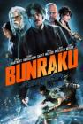 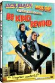
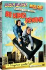


 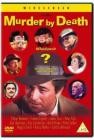
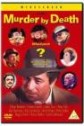

 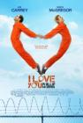
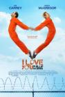 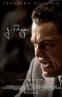
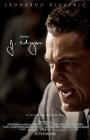


 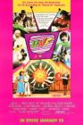
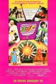


, but I was hoping to see more Bruce Willis.")


watch it before I could really say I'd seen the whole IMDb list. I'm sure I had seen at least some scenes before, but others I'm not sure if the familiarity is from having seen the movie or from when I read the book in 8th grade.")


 and Arsenic and Old Lace (Cary Grant). And it certainly had funny moments, but it had a more sincere feeling than I expected. Good movie overall.")


 DBZ they didn't use the original Japanese music. Also they had a tendancy to cast too many characters with cowboy voices, like Android 13 in this. I think the English voice acting actually was done in Texas before they changed production companies.
This was average compared to the other DBZ movies I've seen. I do have a memory of Dan very amused to show me a clip of this while we were at a summer computer camp. It was of the part where Android 13 catches Goku and punches him in the nuts so hard he gets knocked out of Super Saiyan. And then the part where Goku is getting beat so badly he doesn't even get to fall to the ground between attacks.")


 Days of Summer - Fun movie that does a great job of mixing many different styles. It has for me some of the same appeal of Eternal Sunshine of the Spotless Mind. I like the wise little sister. The list of her traits he loves later paired with the same list that he hates. The black & white \"love documentary\" parts. I like Joseph Gordon-Levitt and Zooey Deschanel, but to me she will always be Dorthy from the high-potential, low-results mini-series Tin Man.
<br>
Also, it seems like I like any decent movie with the Manic Pixie Dream Girl archetype.")


 of this with Nick and Brett we were in disagreement: I disliked this much more than The Wicker Man, and they took the opposite position. I think I should clarify: The Wicker Man is probably actually a worse movie. Its appeal to me was that it had so many moments that just completely made no sense and character actions that had no reason or explanation. That made it so bad it was funny, but Battlefield Earth is to me just run-of-the-mill bad which was leaving me quite bored. Perhaps it's a pointless delineation as I was actually falling asleep during both.")


, but when I saw Anna the \"ghost\" I immediately thought Wintermute (from Neuromancer).")


 was great. Some of the violence was pretty gruesome even considering it was Terantino. It made me remember having read someone comparing the Nazis watching Nation's Pride cheering the violence against the Allied soldiers to the audience cheering the violence on screen against the Nazis. Anyway, the inferno was pretty impressive and the face projected on the smoke was creepy cool.")
 that this was a vampire movie. So it seems weird that the movie was still what I expected, just with the addition of a vampire. Also the version I had turned out to be an English dub. The main characters were good, but the side characters seemed like unnatural dubs.")


 I can't help but enjoy it some. And my expectations were already so low that disappointment was nearly impossible. What was left was just the fun of seeing things and characters I enjoyed. I can't believe they had Christine from Phantom of the Opera as Bulma and Chow Yun-Fat as Roshi. Chi Chi was really cute. No Krillin unfortunately. Bulma did have her Dragonball radar and her capsule transportation. So, yeah, I wouldn't recommend this to anyone, but I couldn't help but watch it. Kamehameha ftw!")


, and I pretty much don't care for the whole South society and mindset as conveyed. So the whole requiem for the society now \"gone with the wind\" had no appeal to me.
<br><br>
<i>Second Half</i><br>
I think the second half of the movie could have stood just fine without the first half. And I think it was a great movie. Scarlett did become an interesting tragic character. A note on two of the big quotes from the movie. The final line that \"tomorrow is another day\" seems like a stupid subversion of what should have been the last line only a minute earlier: \"Frankly my dear, I don't give a damn.\"")


. Clearly, this movie was their introduction to dystopian politics.")


")


 and both always ranked high on movie lists.")


, but I love them both. Such a great thing to have a story focused down to pretty much one room and just watching the characters interact. I liked this (both versions actually) a lot.")


 made it even more so.")


")


 got in an argument over this movie. My dad wanted to take me to see it, but my mom, more strict at the time, didn't want it to happen. At some point she finally gave in, but then we had to go see it in the cheaper, crappier theater. It was still amazing, of course. And as Bob can attest, at any given time my dad's house on Mountain Oak probably had the DVD of this or Fifth Element playing. It's too bad they never made any sequels to this. <i>None. Never.</i>")


Good movie, cool music.")


 which was funny but crushed my hopeful claim that it wasn't a bad movie. The .2 time I saw this was when I watched a fan edit of the prequel trilogy which had only 20 minutes of Episode I and no Jar Jar scenes.")


. But man, remembering this movie just makes me think \"life is terrible.\"")